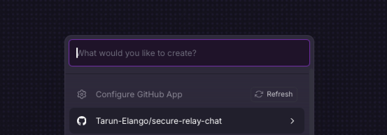
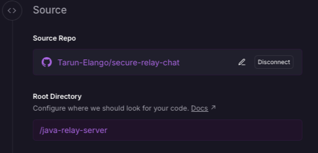
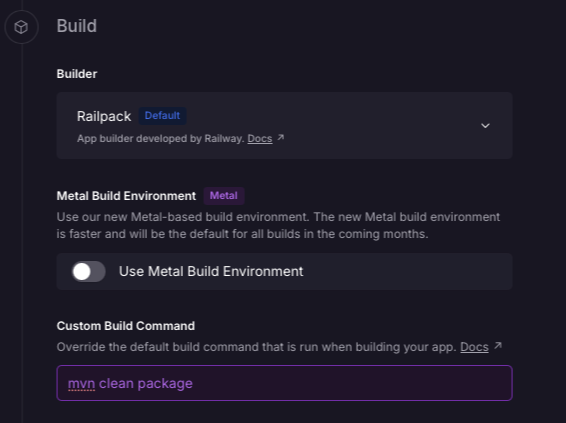
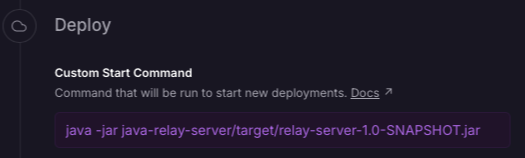
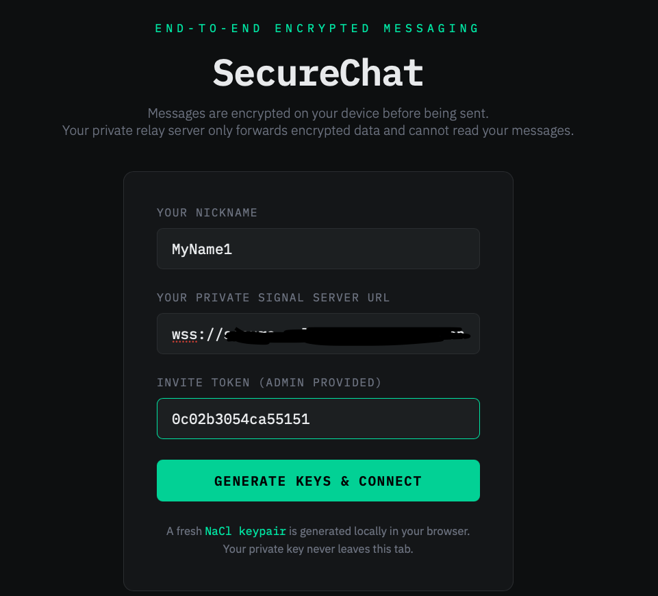
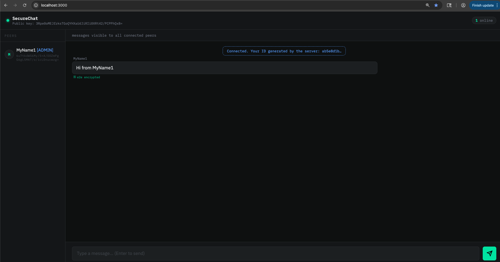

End-to-End Encrypted Chat — Client-Side Encryption, Stateless Relay, No External Dependencies¶
last updated: April 4, 2026
Steps to Self-host the Relay Server on Railway
Purpose¶
A minimal, end-to-end encrypted group chat using a dumb relay server. Clients send encrypted messages to the relay, which forwards them to intended recipients without ever seeing plaintext or private keys. This repository includes:
- A Relay server implemented in Java using
WebSocketServer(hosted by one member of the group). - A simple client UI in HTML/JS that connects to the relay (can be hosted or run locally).
The goal is to demonstrate a simple group chat where clients handle all encryption locally and do not rely on external services, providers or dependencies like signal, whatsapp, or telegram. This ensures all the chat data remains private between participants.
Scenario where this is useful¶
You want to have a private group chat with friends, family, or colleagues without relying on third-party platforms.
How it works:
- One person (the admin) runs the relay server and shares the invite token with the group.
- Each participant opens the client UI in their browser, enters the invite token and WebSocket URL, and connects to the relay.
Now you have a private group chat open, where all messages are end-to-end encrypted on the client side. The relay simply forwards encrypted messages without ever having access to the plaintext or keys.
How it works¶
The diagram below shows the full lifecycle of a session — from a client joining, to sending encrypted messages, to disconnecting.
sequenceDiagram
participant Client as Your Browser
participant Relay as Relay Server
participant Peers as Other Participants
Note left of Client: 1. Generate a keypair locally (never sent to server)
Client->>Relay: Join — send nickname, public key, invite token
Relay-->>Client: Confirm join — send list of connected peers
Relay-->>Peers: Notify everyone a new peer joined
Note left of Client: 2. Sending a message
Client->>Client: Encrypt message for each peer using their public key
Client->>Relay: Send encrypted blob (ciphertext + nonce) to target peer
Relay->>Peers: Forward the encrypted blob — relay never sees plaintext
Peers-->>Client: Receive blob, decrypt using own private key
Note left of Client: 3. Leaving the session
Client->>Relay: Connection closed
Relay-->>Peers: Notify everyone this peer leftJoining the session¶
When a client connects, the browser generates a fresh X25519 keypair using tweetnacl. The private key never leaves the device. The client sends only its public key, nickname, and invite token to the relay. The server validates the invite token, checks the user cap, and responds with a roster of everyone currently connected — including their public keys — so the joining client can start encrypting messages for each of them.
Sending a message¶
When you send a message, the browser encrypts it separately for each peer using that peer's public key and your private key (NaCl box, XSalsa20-Poly1305). Each encrypted blob — just a ciphertext and a nonce — is sent to the relay, which forwards it to the right recipient. The relay only ever sees opaque Base64-encoded blobs; it has no way to read the content.
The server applies a few guardrails before forwarding: it rate-limits messages, enforces a 64 KB size cap, and rejects any message missing required fields (publicKey, ciphertext, nonce).
Disconnecting¶
When a client disconnects, the relay removes them from the session and notifies remaining peers. If the admin disconnects, a new admin is automatically elected from whoever is still connected.
Setup & Usage Guide¶
For the Admin (Running the Relay Server)¶
The admin is responsible for hosting the relay server and sharing the invite token with participants out-of-band.
flowchart LR
Admin[Admin] -->|starts server| Server[Relay Server]
Server -->|generates & prints token| Token[ Share Invite Token with Participants ]Note: a relay server is just another server that forwards encrypted messages to connected clients.
Steps:
- Choose a host machine (a cloud VPS, big cloud provider, etc.)
- Clone the repo and navigate to the
java-relay-serverdirectory. - Ensure Java (JDK) and Maven are installed.
- Inside
relay.java, adjustMAX_USERSif needed (default is 5). - Build the server:
mvn clean packagefrom thejava-relay-serverdirectory. - Start the server:
java -jar target/relay-server-1.0.0.jar - Share the invite token printed in the server logs with participants.
For Participants (Connecting as a Client)¶
Each participant opens the client UI in their browser and connects using the invite token and WebSocket URL provided by the admin.
flowchart LR
Clients -->|enter token and WebSocket URL in UI| Connect[Connected]If using Python:
- Change to the
uidirectory. - Run:
python3 -m http.server 3000 - Open
http://localhost:3000in your browser.
If using Node:
- Change to the
uidirectory. - Install live-server:
npm install -g live-server - Run:
live-server --port=3000 - Open
http://localhost:3000in your browser.
Once the UI is open, enter your nickname, the WebSocket URL (e.g. wss://website.com:8080), and the invite token to connect.
Dependencies¶
| Component | Dependencies |
|---|---|
| Server | Java (JDK) + Maven; Java WebSocket implementation + gson (managed via Maven) |
| Client | tweetnacl and tweetnacl-util for browser-side crypto (load from CDN or bundle with a Node build) |
| Local serving | Python (python3 -m http.server) or Node (live-server) |
Deploying with Railway (https://railway.com)¶
We will deploy the relay server on Railway, which provides a simple way to host web applications. The client UI will be served locally.
Steps to deploy the relay server:
-
Create a new project on Railway and connect your GitHub repository. Once you select the repository, this will take you to deployment settings.

-
Source section in deployment settings: change source to /java-relay-server

-
Networking section in deployment settings: enable public networking by clicking generate domain.
-
Build section in deployment settings: set the build command to
mvn clean package
-
Deploy section in deployment settings: set the start command to
java -jar target/relay-server-1.0.0.jar
-
Press deploy and wait for the deployment to complete.
-
After deployment, view logs (from deployment tab) to find the invite token printed by the server. Share this token with participants.
In the settings (networking) you will get the public domain for your server, which will be used as the WebSocket URL in the client UI (e.g.
your-project.up.railway.app, when using this url, make sure to add thewss://prefix, which becomeswss://your-project.up.railway.app).
Opening the UI: Follow the steps in the For Participants (Connecting as a Client) section above to serve the client UI locally, and open http://localhost:3000 in your browser.
Add your name, the WebSocket URL from Railway (make sure to add the wss:// prefix), and the invite token to connect to the relay server.

And Voila! You should now be connected to the relay server hosted on Railway, and can start chatting securely with other participants.

Top left is your public key, and under each participant's name is their public key. This can be used for out-of-band verification to ensure you're communicating with the intended peers.
Things to look out for when using.¶
- Compare public keys in the user interface with out-of-band verification methods to confirm authenticity of the users you're communicating with.
- Ensure the relay runs on HTTPS/WSS; this is the operator's responsibility.
- The relay maintains user connections and stores associated public keys - something to be mindful of.
- Adjust server logs according to privacy requirements.
- Forward secrecy note: As long as clients and the server are not compromised, this provides forward secrecy — past sessions remain private; compromise during an active session still exposes that session.
- There is a message limit of 64 KB.
- Update max users in relay.java.
- The way this is currently set up, each relay server will simulate one chat room.
- If you want to reset the invite token, simply restart the relay server. This will disconnect all clients and generate a new token for the next session.
Future improvements¶
- Persist keys: Use IndexedDB so identity survives refresh on the browser.
- Logging: Avoid printing
INVITE_TOKENto public logs; show it only to the admin securely. - Password protection: Add a password on the login page as an additional security measure.
- Group encryption: Implement a more efficient group encryption scheme (e.g. Signal's Sender Keys) to avoid encrypting separately for each peer.